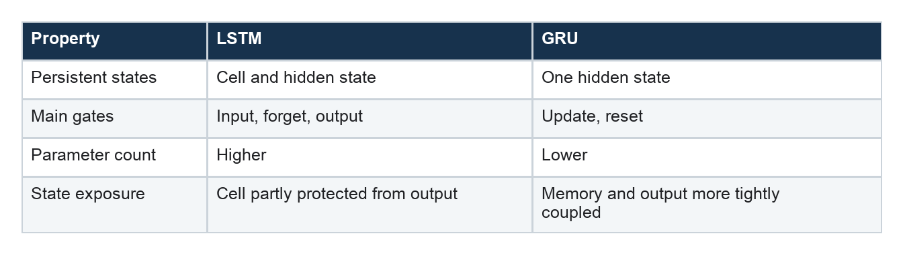

GRU Forecasting: A Leaner Gated Memory
How update and reset gates create a compact alternative to the LSTM
Series: Sequence Models for Prediction, Part 6 of 18
The gated recurrent unit, or GRU, starts from the same premise as the LSTM: a recurrent network needs learned control over what it remembers.
It reaches that goal with a simpler mechanism. There is no separate exposed hidden state and long-lived cell state. One state carries the sequence forward, governed primarily by an update gate and a reset gate.
Fewer gates mean fewer parameters and sometimes faster training. They do not guarantee better forecasting.
The two gates
Notation varies across implementations, but the core behavior is stable.
The update gate decides how much of the previous state to retain versus replace. The reset gate controls how strongly the previous state influences the new candidate content.
One common description is:
update: z_t = sigmoid(...)
reset: r_t = sigmoid(...)
candidate: n_t = tanh(input + r_t ⊙ transformed_previous_state)
state: h_t = (1 - z_t) ⊙ n_t + z_t ⊙ h_(t-1)
If the update gate is near one, the old state flows forward. If it is near zero, the candidate replaces it. The reset gate lets the candidate ignore parts of the past when constructing new information.
The result is a learned, adaptive smoothing process over hidden representations.
A direct forecasting architecture
A compact forecaster can use one 64-unit GRU layer:
self.rnn = nn.GRU(
input_size=n_features,
hidden_size=64,
batch_first=True,
)
As with the LSTM, only the final output state is retained. Dropout and a dense layer turn it into the next 24 hourly values.
[batch, 168, features]
↓ GRU
[batch, 168, 64]
↓ final state
[batch, 64]
↓ linear head
[batch, 24]
The GRU must compress the useful contents of the entire input window into 64 numbers.
GRU versus LSTM
The comparison is often presented too simply: GRU is faster; LSTM remembers longer. Reality depends on the task, data, implementation, and tuning.
The structural differences are clearer:

With six input features and 64 hidden units, this GRU has 15,384 trainable parameters; the equivalent LSTM has 19,992.
That difference can matter on smaller datasets. Lower capacity may reduce overfitting, while the simpler state update may or may not preserve the specific long-range details the forecast needs.
Choosing between GRU and LSTM
There is no architectural rule that decides the winner before training. The GRU’s lower parameter count can be an advantage when data are limited, while the LSTM’s separate cell state can offer more control when several timescales must coexist.
Compare them under the same:
- hidden width and number of layers;
- input window and forecast head;
- optimizer budget;
- chronological validation periods;
- random seeds.
Also compare total parameters and wall-clock time. Equal hidden width is not equal capacity because the LSTM has an additional gate.
Strengths of the GRU
The GRU is compelling when:
- sequential state updates match the problem;
- an LSTM feels unnecessarily large;
- training data or compute is limited;
- online inference benefits from carrying one state forward;
- input width may change but parameter efficiency matters.
It is often an excellent first recurrent model because it provides most of the gated-memory idea with less machinery.
Limitations
Like the LSTM, the GRU processes time steps sequentially and compresses the entire history into a fixed-size final state.
It has no explicit mechanism for a forecast horizon to retrieve a particular old hour. Its theoretical memory can exceed its practical memory.
It is also easy to mistake a recurrent inductive bias for proof of predictability. Smooth, persistent targets can make a GRU look impressive even when a naive forecast is equally useful.
Complete PyTorch implementation
The GRU implementation is structurally close to the LSTM forecaster, but PyTorch’s GRU maintains one recurrent state rather than a separate hidden and cell state.
import torch
from torch import nn
class GRUForecaster(nn.Module):
def __init__(
self,
n_features,
horizon,
hidden=64,
dropout=0.10,
):
super().__init__()
self.rnn = nn.GRU(
input_size=n_features,
hidden_size=hidden,
batch_first=True,
)
self.dropout = nn.Dropout(dropout)
self.head = nn.Linear(hidden, horizon)
def forward(self, x):
# states: [batch, lookback, hidden]
states, _ = self.rnn(x)
final_state = states[:, -1, :]
return self.head(
self.dropout(final_state)
)
LOOKBACK = 168
N_FEATURES = 1
HORIZON = 24
model = GRUForecaster(
n_features=N_FEATURES,
horizon=HORIZON,
)
x = torch.randn(32, LOOKBACK, N_FEATURES)
y_hat = model(x)
assert y_hat.shape == (32, HORIZON)
The same verified implementation is available in the companion model module. The complete Dataset, DataLoader, and fit/evaluate workflow is explained in the shared PyTorch training companion.
Training and failure modes
The GRU shares recurrent training issues with the LSTM: sequential computation, sensitivity to state width, and possible loss of precise early information. Gradient clipping, careful input scaling, validation-based early stopping, and repeated seeds are useful safeguards.
A final-state head can become a bottleneck on long windows. Alternatives include pooling all states, applying attention over them, or giving each forecast horizon its own query.
For streaming inference, the hidden state can be carried forward rather than recomputing the full window. That serving mode should be represented during training; otherwise stale state and reset behavior can create surprises.
Part 7 leaves recurrence behind. A 1D convolution learns local temporal shapes in parallel—but its receptive field and pooling strategy determine what it can remember.
Further reading
Series navigation: Series index · Previous: LSTM forecasting · Next: 1D CNN forecasting